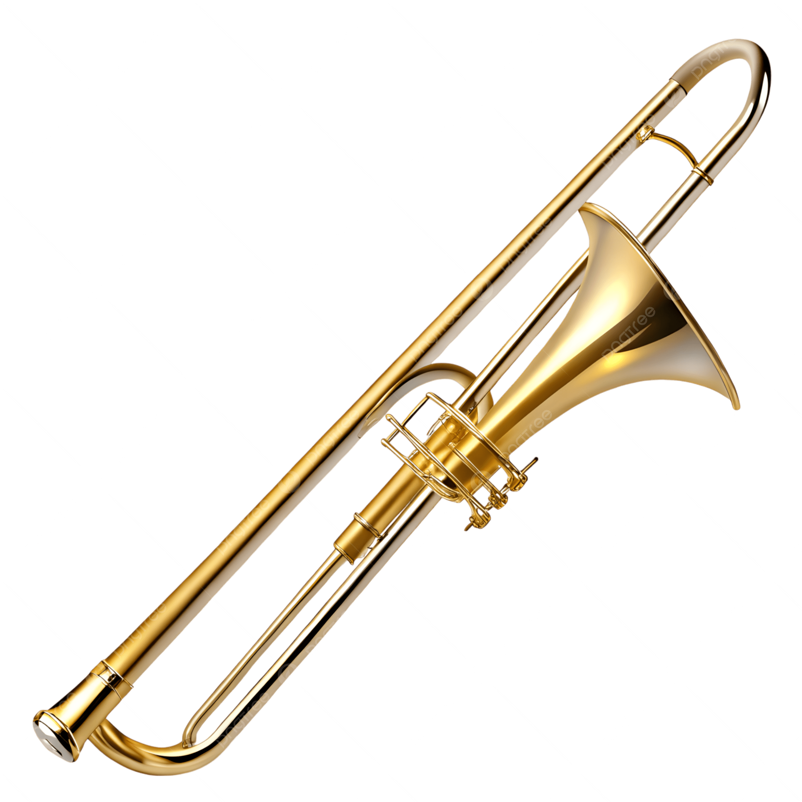
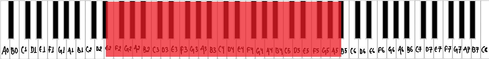
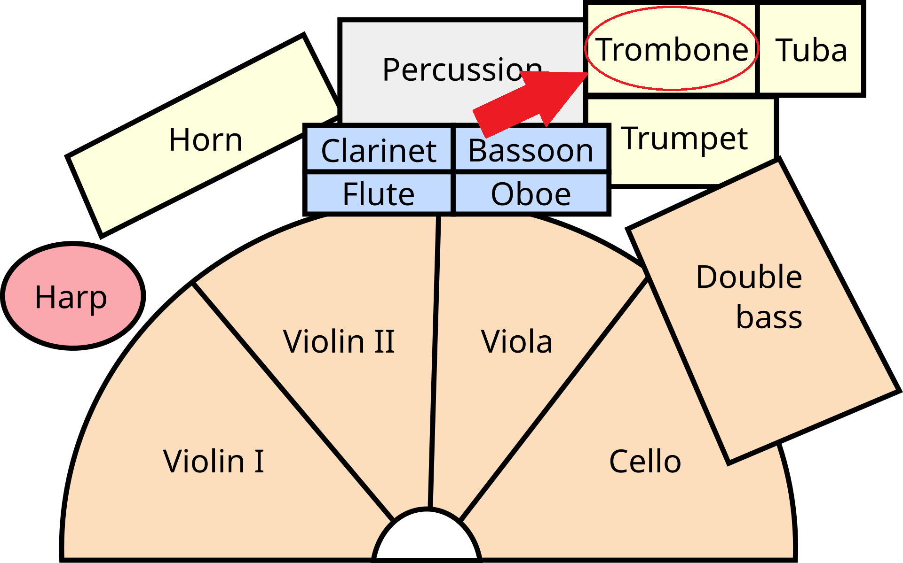
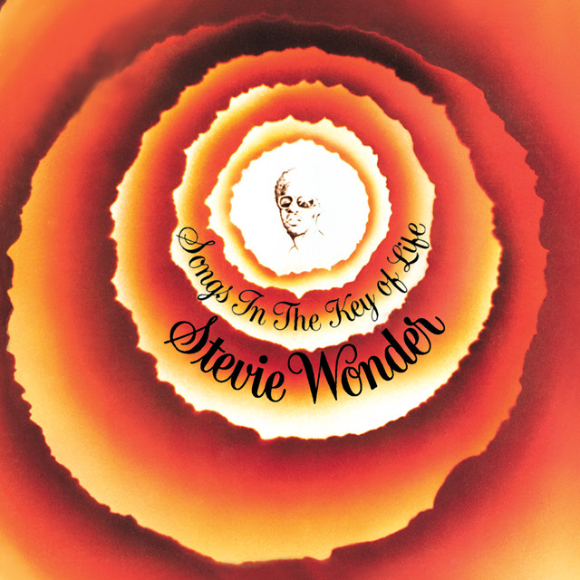
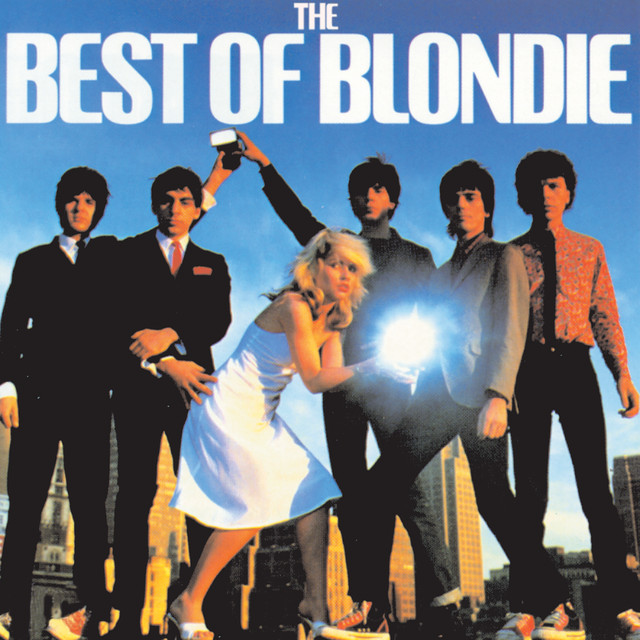
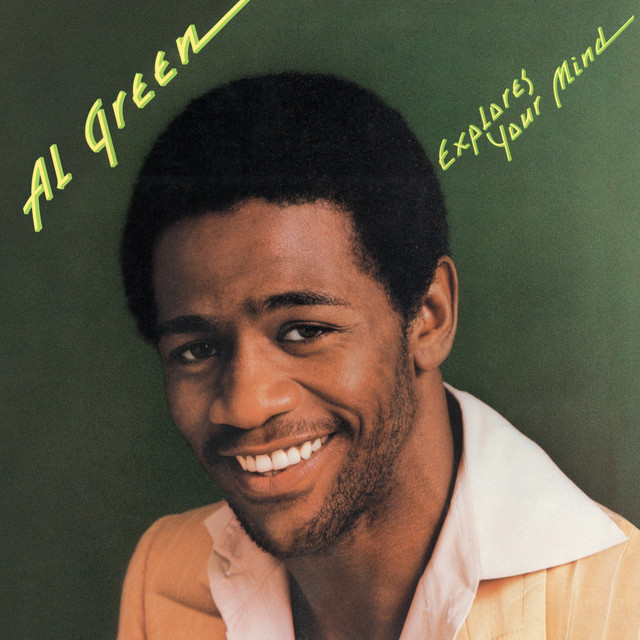

What is a trombone?
The trombone is a brass instrument that uses a slide instead of valves. The player buzzes their lips into a cup-shaped mouthpiece and moves the slide in and out to lengthen or shorten the tube, which changes the pitch. This lets the trombone glide smoothly between notes. [1]


Musical range and clef
The tenor trombone covers about E2 to B♭5. Notes below this are possible on a trombone with an extra valve, and the highest notes are very demanding. [2]
Trombone music is mostly written in the bass clef. For high passages, composers sometimes use the tenor clef, and the alto clef is used for the alto trombone. [3]

Where is the trombone seated in an orchestra?
The brass section sits at the back of the orchestra, behind the woodwinds. From the conductor's podium, the horns are in the center, with the trumpets to their right and the trombones and tuba at the far right. Trombones sit toward the back right, next to the tuba. [4]
Popular songs/pieces that feature the instrument:

Sir Duke
Hey Ya!

The Tide Is High

Take Me To The River
References
- Wikipedia, "Trombone".
- Wikipedia, "Trombone".
- Wikipedia, "Trombone".
- Rockford Symphony Orchestra, "Are all orchestras arranged on stage the same way?".